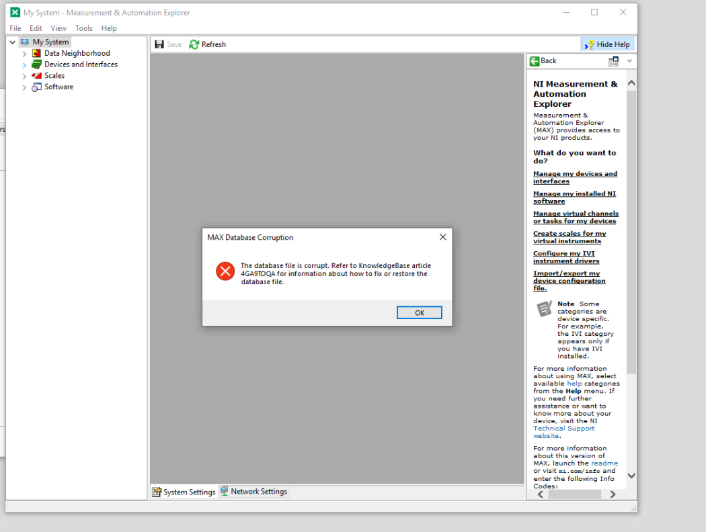

DAE Troubleshooting
Note: If your DAE is not starting up correctly and you are struggling to see what the error is while, it might be worth running the IOC via /ioc/ISISDAE/.../runIOC.bat as this will give you additional messages compared to running from ProcServ.
Restarting the DAE in IBEX
This IOC does not appear in the normal IOC restart list in the IBEX client, first open an EPICS terminal
...\EPICS\epicsterm.bat
then run
console -M localhost ISISDAE_01
and when connected press Ctrl-x once, you should see some restart messages from the IOC. Quit the EPICS term.
invalid tcb start
It is likely that you are in a muon configuration for the DAE but using a neutron tcb file or vice versa.
Either change the tcb file you are using or do the following steps to change the DAE type:
Change the DAE type of your icp_config.xml (in EPICS/ICP_Binaries) to the correct value (1 for DAE2 neutron, 2 for DAE2 muon, 3 for DAE3 neutron, 4 for DAE3 muon).
In the same directory edit the isisicp.properties file to use either neutron or muon for
isisicp.simulation.detcards.typeRestart the ISISDAE using console in an EPICS terminal and end the isisicp task in the task manager (the ISISDAE should autorestart it)
DAE switches from processing to Unknown and never goes into SetUp / Run can not be ended
DAE2
This issue has been observed on LARMOR and TOSCA, accompanied by the following error messages continuously being logged to C:\data\log\icp-<date>.log:
2017-04-13 20:52:14 NIVISA: Error "Could not perform operation because of I/O error." (code 0xbfff003e) returned from "viMoveIn32" while transferring 1001 items at VME address 0x18000fa4
2017-04-13 20:52:15 NIVISA: Error "Could not perform operation because of I/O error." (code 0xbfff003e) returned from "viMoveIn32" while transferring 1001 items at VME address 0x18000fa4
2017-04-13 20:52:16 NIVISA: Error "Could not perform operation because of I/O error." (code 0xbfff003e) returned from "viMoveIn32" while transferring 1001 items at VME address 0x18000fa4
2017-04-13 20:52:17 (0) NIVisa: [Warning] (NIVisa::retryBlock) retryBlock: 1001 items from address 0x18000fa4
2017-04-13 20:52:17 (0) NIVisa: [Information] (NIVisa::reinit) Calling NIVisa::reinit()
2017-04-13 20:52:17 Calling NIVisa::reinit()
2017-04-13 20:52:17 Endian workaround DISABLED, blocks transfers DISABLED
2017-04-13 20:52:17 This is a VXI DAE
This was resolved by power cycling the DAE followed by stopping the visa server and running resman. Instructions how to reset the DAE can be found in these slides.
DAE3
On a DAE3 machine a vendor network library is used rather than NI Visa and the equivalent sorts of errors will have Qx or Quixtream prefixes. Access from the ISISICP is via the network, so there is no intermediate service/server to restart. Usually the ISISICP will retry failed connections, but check with electronics if there are repeated failures. You can try restarting ISISICP in case the vendor library needs a reload itself. An example of the error message is:
Qxtrm_channel::RDMARead failed rdma2 address 0x40010 nbytes 4(Quixtream: The timeout period on this channel expired before the transfer commenced. Channel status: Transfer failed. Data packet not received before timeout. )
In general if you see an error like this or starting with NIVISA you should restart the DAE, then contact electronics.
DAE doesn’t seem to be connected/I want to run without a DAE connected
The DAE can be set to run in simulation mode, this must be unset before data will be collected. To set the mode run g.set_dae_simulation_mode(True) or g.set_dae_simulation_mode(False) to unset.
To change the simulation mode manually, in icp_config.xml change the simulate property to 1 (or 0 if turning off simulation mode). icp_config.xml can be found in either the “LabVIEW modules” or “ICP Binaries” directory. Stop the DAE IOC from the console, then kill the ISISICP process. Finally, restart the DAE IOC from the console.
Log file for LabVIEW modules DAE
IBEX uses isisicp program (located in labview modules\dae) that writes to C:\Data\Export only\logs\icp\log\icp-<date>log. There is an example DAE log in this wiki. This is a good place to locate DAE specific issues, not all of the details in this log appear in the ISISDAE IOC log.
Error pop up: *** ICP failed to start - your DAE may be switched OFF or is missing cards ***
The DAE unit may be switched off. This is particularly likely during shut down. Change the DAE into simulation mode as described above.
If the DAE is on then it is likely that it has been power cycled. Two possible ways to fix it are:
Restarting the DAE rack server
Via NI MAX, using the following steps:
Connect to the DAE rack server via Remote Desktop from the NDX machine (the machine should be listed in the Remote Desktop dialog - if not use address 192.168.1.2)
Run NI MAX on the DAE rack server
Under Software->NI-VISA X.X.X, select VISA Server and click “Stop server now” (if you cannot see this button you may be on the wrong tab on the bottom bar)
Under “Devices and Interfaces”, select “VXI System” and click “Run the VXI Resources Manager”.
Finally, repeat b) but click “Start server now”
If on NI MAX the “Run the VXI Resources Manager” button and VISA server buttons are greyed out/not available this is likely a sign that the VISA server cannot talk to the DAE.
For DAE3 see DAE3 does not start below
Blocks not being added to Nexus file
This should not occur but has when a database was missing our extra column in the archive. If the sample table in the archive is missing a sample_id, run the following. Note that it can take a while on a database with a large number of rows in that table.
"c:\programs files\wherever...\Mysql.exe" -u root -p --execute="ALTER TABLE sample ADD COLUMN sample_id BIGINT UNSIGNED NOT NULL PRIMARY KEY AUTO_INCREMENT COMMENT 'Sample id'" archive
Not enough CRPT memory
CRPT (Current Run Parameter Table) memory is a large in-memory structure used to store information about the run, including histogrammed data. Data is read from the DAE into CRPT memory and then written to file, in event mode CRPT memory is where events are histogrammed on the fly during collecting to provide real-time spectra. If you get a CRPT size error, it means the product of (number of periods) * (number of spectra) * (number of time channels) is too big. If you are in histogram mode you either need to reduce one of these variables or get the CRPT size increased (icp_config.xml) but remember this is real memory that the ICP will claim at startup. If you are in event mode and get a CRPT error, it may mean you have misconfigured the time regime you plan to use for the on-the-fly rebinning e.g. you are trying to rebin events at event mode resolution not at a coarser resolution. The event mode / histogram mode choice and which time regime to use is governed by the wiring tables.
End of run script not working or data not being copied to the archive
There is a known bug where starting a run at the same time as the previous run is being saved can be cause the nexus file not to be marked read-only and so not copied to the archive. A NEXUS ERROR: ERROR: message will appear in the log. See https://github.com/ISISComputingGroup/IBEX/issues/4977
To fix this and other errors see experimental runs troubleshooting
No frames/beam current registered by the DAE
Try switching the timing source to “Internal test clock” (found in experiment setup tab of DAE) and starting a run. If frames are received in this state, it means that the DAE isn’t receiving timing pulses from the central source. If that’s the case, it needs attention from the electronics group (ISIS Detector Systems Group in Zoom). Note, this may occur on more than one beam line so keep an ear open for any other reports - if it does it is likely to be a problem with the PPP signal centrally.
Don’t forget to switch the timing source back when you’re done!
Other things to to check in this state are:
Visit the beamline - (possibly with electronics if suspecting a hardware problem). Software usually doesn’t just stop normally when other things are working - right? :smile:
Most importantly, ask the scientists if anything happened around the time of the problem, in a recent case they mentioned someone had moved a cable on an ADC (although this was not the problem!).
Look at the lights on the ADC or detector input module cards on the DAE. If no lights flickering, there is no data coming in and this is a good indicator that the HT might be off (a few lights might mean shutter closed or beam off).
data/transfer lights on a DAEII, flickering & transfer lights inactive not a good sign. Could be the link to the PC if transfer lights are not showing activity.
If frame/raw counts are not showing up, a good diagnostic is to put the DAE into “Internal Test Clock”. If this works and frames appear, it is likely that there may be a problem with a Time of Flight signal (this often affects more than one beamline.
My total counts are low
Make sure that the timing is appropriate (e.g. a DAE Timing Source of ISIS (first TS1) will only count the first pulse not all 4). If it is left on “internal test clock” you will receive no uamps at all.
Count rate low (across multiple instruments)
This can be due to an analogue (“PPP”) signal being incorrect, this is an analogue signal that the DAE uses internally to calculate beam current.
If you see this, DSG group may be the best contacts, they may then pass the issue onto the relevant (accelerator?) teams to investigate more.
Exact copy-pasted note from the relevant team the last time this happened:
[…] the Buffer Unit from the
DiagsRoom that sends EIM6 to the HET Racks where it becomes the PPP Signal is loading the new electronics, causing this loss of signal
Simulation mode DAE complains about missing cards
From an issue in Ticket https://github.com/ISISComputingGroup/IBEX/issues/3099 - example traceback:
[2018-04-09 15:26:49] sevr=major setDCEventMode: Unknown detector card 3
[2018-04-09 15:26:49] setDCCardMode: Unknown detector card 3
[2018-04-09 15:26:49] setDCEventMode: Unknown detector card 4
[2018-04-09 15:26:49] setDCCardMode: Unknown detector card 4
[2018-04-09 15:26:49] Cannot find card for crate 3
[2018-04-09 15:26:49] Unknown detector card 3
[2018-04-09 15:26:49] Cannot find card for crate 4
[2018-04-09 15:26:49] Unknown detector card 4
[2018-04-09 15:26:49] Attempt to use missing detector card/crate 3
[2018-04-09 15:26:49] Attempt to use missing detector card/crate 4
[2018-04-09 15:26:49] : Exception occurred.
The issue here is that the default simulated DAE has 2 detector cards in it, but the real DAE has more cards. To fix edit isisicp.properties in LabVIEW modules to create more cards. The number of cards on each crate is given by the maximum missing card for the crate (see log), more crates can be added as well as cards. An example from wish with 3 crates, 10, 10 and 12 card per crate is:
isisicp.simulation.detcards.crate0.number = 10
isisicp.simulation.detcards.crate1.number = 10
isisicp.simulation.detcards.crate2.number = 12
If you have defined isisisp.datadae.use = true in isisicp.properties then you need to make sure the detector card referred to in data_dae.xml is created by above. If this is a pure setup/test machine rather than a real instrument, you may just want to set isisisp.datadae.use = false
Real DAE complains about missing cards (but was previously working)
If you see messages like
setDCEventMode: Unknown detector card 1
setDCCardMode: Unknown detector card 1
Attempt to use missing detector card/crate 1
Unknown detector card
when trying to BEGIN on a real DAE, then there are two likely causes:
you are loading a wiring table that is specifying cards that do no exist, you need to correct the wiring table
The ICP has not detected all the cards you believe are present in the DAE, hence they appear to be “missing” or “unknown”
If the wiring table is correct, try a restart of the ISISICP - the DAE is only scanned at program startup, it might be the DAE hardware was not feeling very responsive first time around. If this doesn’t help, then it may be the detector card has failed, or it could be the hardware is in a strange state and needs a reset. Electronics group have programs that can do this.
If the system is running DAE3, then there is another possible cause. check the log for a line like
Unable to create Quixtream on process20: Quixtream Error: Failed to bind the socket to the local port.
The quickstream driver expects certain ports in the UDP dynamic range to be available - this error indicates something is not. It is not very helpful about which specific port (it uses UDP ports from 0xFE00 (65024) upwards) so a reboot may be the only option.
Real DAE complains about missing cards/crates (new card/crate hardware has just need added)
If a new DAE3 card or DAE2 crate has been added, it may not be picked up automatically. The ISISICP scans “crates”, where for DAE2 this was a full 11 slot VME crate, but for DAE3 each “crate” is actually a physical DAE3 card. So adding a new DAE2 detector card to an existing crate does not require any additional changes, but adding an additional DAE3 card requires a change to icp_config.xml in c:\labview modules\dae. If it contained:
<String> <Name>DAEDevice0</Name> <Val>ISISDAE0</Val> </String>
this tells it to scan for crate 0. Add an additional line:
<String> <Name>DAEDevice1</Name> <Val>ISISDAE1</Val> </String>
to also scan for crate 1. For DAE2 the name like ISISDAE0 refers to an alias for a VISA resource name, for DAE3 just follow the same naming convention but no VISA alias needs creating. The number of DAEDevice* lines present should match:
For DAE2, the number of VME crates
For DAE3, the number of DAE3 cards
DAE exception messages
If you get an error in you IOC log like:
[2018-10-26 17:33:37] sevr=major Win32StructuredException code 0xc0000005 pExpCode 0xc0000005 pExpAddress 0000000000000000
[2018-10-26 17:33:37] 2018/10/26 17:33:36.741 IN:DEMO:DAE:AD1:INTG:TMIN:SP devAsynFloat64 pPvt->result.status=3, process error isisdaeDriver:writeFloat64: status=0, function=184, name=INTG_TMIN, value=0.000000, error=Win32StructuredException code 0xc0000005 pExpCode 0xc0000005 pExpAddr
One cause would be the IOC is trying to call a function in the ISISICP that it can’t find. If the ISISICP has been updated, but /RegServer has not been run, then new functions added there will not be visible. See here.
DAE3 does not start
DAE3 is new ethernet based acquisition electronics on ZOOM and MARI, it used ISISICP and looks like DAE2 for most purposes. If everything remains in processing, it may be that the arp network entries did not get created - these should be done as a system time boot task. Do arp -a and see if there is an entry for 192.168.1.101 etc. If not, run set_dae3_arp.bat in c:\labview modules\dae as as administrator
Note that DAE3 does not ping, so the only way to know if it is there is by running qxtalk or the isisicp (via ibex)
If IBEX has either been in simulation mode or not running for a long time previously, then some of the tcp ports used by dae3 may have been grabbed by the operating system as described in Real DAE complains about missing cards (but was previously working) above on this page. You will see errors like
Quixtream Error: Failed to bind the socket to the local port."
in the ICP log and some client applications may complain about NULL Pointer errors. The only solution is to reboot the NDX computer.
Error code 112
If there is an error code 112 reported in the log it means that the disk (data volume) is full and it can not start the isisicp program.
DAE Type mismatch error
If you get an error from ISISICP *** ISISICP STARTUP FAILED (DAE type mistmatch)*** it means you are running isisicp program with the wrong sort of dae ie 2 when you have 3. You need to source the correct version of the code for your type of DAE.
isisicp.exe keeps allocating 4GB of memory and then releasing it
It may be https://github.com/ISISComputingGroup/IBEX/issues/3701 - you just need to change the archive array table type to MEDIUMBLOB. Due to a bug in the C++/MySQL connector, each time the database is read, a LONGBLOB’s worth of memory (4GB) is allocated and then released. By changing to MEDIUMBLOB (16MB), a much smaller amount is used.
In C:\Instrument\Apps\MySQL\bin>, run mysql.exe -u root -p and enter the MySQL root password when prompted.
Then run these commands to modify the DB in place:
USE archive;
ALTER TABLE sample MODIFY COLUMN array_val MEDIUMBLOB;
Note: that command rewrites the whole sample table, so if the table is big it may take a while. You may wish to consider truncating the sample table before doing this (though that may not be possible if it contains useful data)
Instrument stuck in WAITING state
We have observed on a couple of occasions that the DAE got stuck in WAITING despite no blocks being outside of runcontrol limits. The cause is yet unclear but in the meantime try:
force a resync of the system with e.g. for OFFSPEC
caput IN:OFFSPEC:CS:RC:SYNC:SP 1restart the
RUNCTRL_01IOC
ISISDAE reports time regimes 1 and 2 are incompatible
Time regimes are incompatible when their starts differ by a non-integer number of microseconds, but sometimes rounding errors may lead to this happening in other circumstances. This check is actually no longer required and has been removed in ISISICP SVN revisions 2010 and above.
ISISICP writes a corrupted journal file
The symptom is that C:\data\journal_<cycle_number>.xml will not be valid xml, it will be truncated at some point. We believe this happens when there are too many blocks set to log into the journal in a particular configuration.
After switching back to a configuration with fewer blocks, the journal file can be (carefully!) manually edited to remove the corrupt entry. Once this is done, runs should go back into the journal as normal (however, runs done while in the configuration with too many blocks will be lost from the journal).
Freddie may also have a patched version of the isisicp that fixes this issue.
My blocks aren’t being written to a run title properly
See the documentation in the user manual
Exception in ICP log
If the ICP is showing an error in the form of NeXusEventCallback: [Warning] (NeXusEventCallback<class DAE2DetCardPolicy>::allFrameCallback) Invalid DAE time value this indicates a hardware problem. Newer versions of the ISISICP will estimate and then correct the time information based on good data either side of the corrupt data, if these messages are appearing frequently you should get in touch with the electronics group.
A measurement.nxs file is being written to the C:\data area
This file is written by the ISISICP on some instruments if they have defined a non-zero “measurement ID”. It is intended to be used for correlating runs. The presence of the file itself is nothing to worry about.
Gap in time in journal file for run start and end (so may think No Data has been written)
If the instrument is in a WAITING state for the entire run, then the end_time as written in the nexus file/journal will be the same as the start time. The ICP interprets end time as end of neutron data collection, so if this never starts it remains the same as the start time and run duration is 0. All sample environment data will be collected OK in a WAITING state.
Simulated DAE does into VETOING after a PAUSE/RESUME
The symptom is that, when you do a begin the instrument will go into running and look happy, but after you do a pause/resume it will permanently be in vetoing (until the run is ended and the next run is started).
This is a bug in the ISISICP as it does not simulate hardware period properly.
Resolution:
Ensure period mode is not “hardware” (use software)
Kill and restart
isisicp.exe(need to do this as the simulated isisicp can’t change period modes correctly without restarting)
Control program unable to read from DAE3
If there are lots of read timeouts, but writes work, then this could be a firewall issue. Try disabling the firewall on the DAE private (192.168.*) network (this is the network that is not the “domain” network on an instrument, often it is called “public”). There should be firewall rules to allow programs access, but something may have gone wrong with them
Beam current in Dashboard oscillating
The beam current in the dashboard is not read from the accelerator, but is calculated from the DAE which records the total amount of proton charge received so far. The software reads the DAE charge value, then reads again after a certain amount of time, and then the difference between these plus the time gap allow an effective beam current to be calculated. By effective I mean it will include running at a slow chopper speed as well as vetos, so with a 25Hz chopper on TS1 you will expect to see roughly half the TS1 accelerator delivered value.
If the DAE beam current is oscillating but the accelerator is constant, then this can be due to issues with the time or charge component of the calculation. If it is oscillating rapidly, it may be due to some reads taking longer and meaning the “time” value used in the calculation does not correspond to the charges used. Look for DAE read timeouts, or sometimes if a lot of spectra are being displayed in the GUI this can slow down DAE proton reads. If there are a lot of DAE timeouts in the log, contact electronics group.
If the DAE beam current is incorrect for a period of time rather than rapid oscillations, this is more likely to be due to either vetos or the DAE syncing to the wrong accelerator pulse. HRPD run at 10Hz and were seeing a DAE beam current going to zero for a period of time and then returning to normal. TS1 runs at 50Hz, but 1 pulse in 5 (10Hz) goes to TS2 so if a 10Hz chopper syncs to the missing pulse you will not see any data. It looked like on HRPD this syncing was shifting and occasionally latching onto the empty pulse for a period of time (several minutes). This syncing could be a chopper or DAE issue, probably start with DAE first .
Add Single Run Entry into the Journal
It is possible to add a single run into the journal database if it was not included for some reason simply run:
"c:\labview modules\dae\JournalParser.exe" <INSTRUMENT> <9 DIGIT run number> cycle_<cycle number, e.g. 19_3> "c:\data\export only" <INSTRUMENT MACHINE HOST NAME>
e.g. "c:\labview modules\dae\JournalParser.exe" LOQ 00108032 cycle_19_3 "c:\data\export only" NDXLOQ
CRPT is not initialised - please set experiment parameters
Ensure you have loaded the correct Time Channels and Data Acquisition tables in the Experiment setup tab of the DAE perspective. Reloading them causes initialisation. If you do not have any tables do the following:
Copy the detector, wiring, spectra and TCB tables from the system tests
In the GUI go to DAE -> Experiment Setup -> Time Channels, select
Use TCB fileand select one of the copied TCB filesIn DAE -> Experiment Setup -> Data Acquisition, select the wiring, detector and spectra tables
See here to learn more about these files.
User Says they Can Not see their Nexus Data files on external machine
After a run the data files should be copied to an external archive so that the users can do more processing. If the user can not get these then there can be multiple causes and it depends exactly where they are looking. The first thing to check is that the machine is copying the files correctly in the post
end run script. The log for this is stored at C:\Data\log\post_command_<day>.log. If there is a problem rectify the problem, possible causes are:
mapped drive (
d:) is not connected properly: often double clicking on the drive is enough to get it remappedsomething else: fix and document here
After fixing the issues the files will be copied after the next run is finished. So start and end a run (with a test like title), you may also want to put it in simulation mode if the DAE is switched off. Finally check the files have appeared in <isis instrument folder>\<machine name>\Instrument\data\cycle_<cycle number>.
DAE Server restart doesn’t work message when clicking start “Cannot start server on port XXX”
If you need to restart the NI visa server on the host machine and clicking start on the server says can not start server, it may be that the via driver has started in the admin account instead of the user account. Log onto the host machine and quit the NI VXI Resource manager application. This should allow the user accounts server to start.
Exception in ICP log
If the ICP is showing an error in the form of Simulation error (read32) this indicates that you have a DAE3 ICP installed. Only a DAE2 ICP has a simulation mode. You should reinstall the ICP from \\isis\inst$\Kits$\CompGroup\ICP\ISISICP\DAE2.
No environment cards in simulation mode
In simulation mode the ISISICP should automatically give you 1 environment card. If you see the following error:
Error - Found 0 environment/period cards (must have only 1) and 0 detector cards
It can be a sign that the ISISICP is trying to restore from a corrupt save file (which could have been caused by running out of disk space, for example). Delete current.run, data.run, and the mysqlite db files from c:\data and try again (after having made enough disk space).
cannot lock named mutex (abandoned): ISISICP_PROCESS_LOCK
If you see the following error:
(0) Application: [Error] System exception: cannot lock named mutex (abandoned): ISISICP_PROCESS_LOCK
This is a sign that there may be multiple ISISICP processes running concurrently. Check for any isisicp processes running as the wrong user (e.g. admin).
It can also be a sign that the ISISICP is trying to restore from a corrupt save file (which could have been caused by running out of disk space, for example). Delete current.run, data.run, and the mysqlite db files from c:\data and try again (after having made enough disk space).
Saved counts are very low
In event mode the ISISICP will wait to get a consistent snapshot from all detector cards. If one of the detector cards has a hardware fault, it can cause the saved counts to appear to be very low. The solution in this case is to ask electronics to look into the fault/replace the faulty detector card. See ticket 5835 for further details of this issue.
DAE Internal test clock is at wrong frequency
Originally DAE2 had a fixed 50Hz internal test clock, newer DAE2 cards and DAE3 have a register at address 0x244 that can be set to the frame length in microseconds (so 20000 for TS1, 100000 for TS2). The DAE makes a guess as power on, but may not get this right. The ISISICP will be modified to set this, but in the meanwhile you may need to use the old “dae tester.vi” to set the value
errors
An error message like:
QXTRM: [Information] QxtrmInterface::readWithRetry Retrying Null pointer
means the control program cannot connect to the DAE. It may be the static ARP addresses have disappeared, or the DAE is switched off, or the DAE has locked up.
Histograms Show as Disconnected when DAE otherwise appears to be working
Sometimes, the four histograms on the DAE display do not show a plot and stay disconnected. Data is however correctly being read from the DAE and saved to file without problems. This may occur if the DAE hardware has previously been disconnected or switched off and the ICP has recovered its connection to the DAE apparently successfully.
The DAE histogram display comes via a different route and does not recover the same way as the data acquisition does. The solutions is to restart the DAE IOC (instructions above).
DAE tab showing pink borders
This seems to be a problem with CSS. To fix, restart the GUI.
set a different run number
In labview modules\dae\service\x64\release you can run e.g.
instctrl.exe SETVAL RUN_NUMBER 441
to set a new run number
DAE IOC cannot start ISISICP
When using EPICS ISISDAE if you see errors like
[2022-01-07 11:11:37] (Re)Making local connection to ISISICP
[2022-01-07 11:11:37] CoCreateInstance() failed with error -2147024809, retrying with CLSCTX_ALL
[2022-01-07 11:11:37] updateRunStatus exception: CoCreateInstance (ISISICP) : The parameter is incorrect.
This likely means that the isisicp did not write the registry entries. This has only been seen on windows server machines.
To solve, import appropriate isisicp reg file from the isisicp install location (isisicp_icp_binaries.reg or isisicp_lv_modules.reg) using regedit
If you get
[2022-01-07 11:22:06] (Re)Making local connection to ISISICP
[2022-01-07 11:22:06] CoCreateInstance() failed with error -2147024891, retrying with CLSCTX_ALL
[2022-01-07 11:22:06] (Re)Making local connection to ISISICPsevr=major CoCreateInstance (ISISICP) : Access is denied.
This is a dcom access permission, most likely seen in jenkins as they run under a domain rather than local account. Again, only seen on windows server. To resolve:
add account trying to run isisicp to “distributed com users” local windows group
run
dcomcnfgcommand and make sure “distributed com users” has appropriate default permissions (it should already have appropriate limit permissions, but check)
If you get the error “server execution failure” (seen on MUONFE) and also the system log has errors/crashes mentioning visa64.dll then you need to copy all the DLL files in c:\labview modules\dae\service\x64\visa into c:\labview modules\dae\service\x64\release. This probably indicates an incompatibility between the system installed visa and what isisicp is expecting. Only seen on MUONFE which runs in simulation mode, so not worried about which visa version being used. If seen on a DAE2 instrument may need more looking at as these machines use visa client-server to the NDH, and the visa versions either end need to match to some level.
DAE not showing period changes in NeXus data file when running in event mode
Due to a historical problem with electronic noise causing random period changes, many instruments have a setting enable to set the period number to 1 in event mode data events regardless of what the DAE claims it is. To make the DAE vale be used you will need to edit isisicp.properties in c:\labeview modules\dae and add/update the line to be isisicp.badheaderworkaround = false then restart the isisicp process
cycle number not updating
The isis cycle is contained in a local file setcycle.cmd on the NDX that is read by the end_of_run.cmd which will also update this file to the most recent copy from the mapped o: drive on the NDX. If the cycle number is not updating then:
sometimes the first run in a cycle gets given the wrong number in the data file, but is put in the correct cycle directory. This is a “feature” as the cycle number is updated as part of copying the file, hence the file will already have been written using the previous number.
if all files are in the wrong cycle, either the central copy has not been updated, or the
o:drive on the instrument has become disconnected so it is not being updated to the latest version
to reconnect the o: drive, log onto the NDX and just open it in windows explorer, that should reconnect using cached credentials. Then check that o:\setcycle.cmd has the correct cycle number.
journal has run number in incorrect cycle
as mentioned above, the cycle number is set by running the setcycle command but this is run at run end. When the cycle is updated on o: it is often copied to instruments, but if a run is already in progress when the cycle is updated, then the journal will use an incorrect cycle number but the raw file will use a correct one. This issue should be fixed in newer ISISICP but this will take a while to roll out.
To fix this you need to edit the two cycle XML journal_*_*.xml files in c:\data involved and move the XML run number block involved from the incorrect XML file to the correct one. Next time a run ends, these updated xml files will get copied to the correct place.
run stuck in ending when using period card
Check icp log file. If it says “waiting for period card” and beam is off, then the issue is that a default end waits to complete the current period cycles, which if beam is off is not going to happen (no trigger signal for frames). Solution is to type g.end(immediate=True) in a python console.
If the instrument is not using hardware periods via a period card, then the c:\data disk area may be full. If it is running in event mode it will get stuck in ending and be be unable to write a data file if it has already filled the disk with raw events. Check nagios and/or the computer. See below.
run stuck in ending or data files not being created
If data files are not appearing on the archive or in the instrument journal viewer, it may be the end process has not completed. After an END is issued remaining data is read from the DAE and then a separate thread in the ISISICP process is spawned to complete the end process. To avoid too many of these threads running at once, they all share an internal semaphore. If somethings gets stuck in the ending process, then runs will not complete. You can see this by there being lots of current.run*, data.run*, and events*.tmp files in c:\data on the NDX instrument. Normally you should only see files for the current run number and maybe the previous run number if the END is still happening in the background. If you see many more than this it would indicate a problem.
To resolve the problem you need to restart the ISISICP in failed run recovery mode.
make sure NDX instrument machine in SETUP
edit
c:\labview modules\dae\isisicp.propertiesand add/amend a line to sayisisicp.failedends.rerun = truekill the
isisicp.exeprocessthe process should now restart and re-save the missing runs
re-Edit
isisicp.propertiesand comment out theisisicp.failedends.rerunline so it will not automatically do any reruns on next restart. This is just in case a later run failed to end and crashed the program due to corrupt data, if it tried to re-end this on restart you might get into an infinite isisicp re-end crashing loop.
corrupted MAX database
for DAE2 systems the VME connection should be visible in the NI measurement and automation explorer, if when you try and view it you get

you probably need to follow https://knowledge.ni.com/KnowledgeArticleDetails?id=kA00Z000000P8awSAC&l=en-GB
ISISICP program crashed and cannot restart, c:\data area full
If you need to recover a system that has filled up its c:\data area due to a long event mode run with e.g. noisy detectors then you can use the following. This assumes the scientists do not need the data, you can move the files off instrument but recovery is hard and may not be possible.
log onto NDX computer
Run
stop_ibex_serveropen
c:\datain windows explorer and sort files by namelook for a very large
eventsYYYYY.tmpfile, make a note of theYYYYYnumber and then select andshift+deletethis file (you do not want to move it to recycle bin - make sure the prompt says “permanently delete this file” and not “delete this file”)Also now shift+delete
current.run,current.runYYYYY,data.run,data.runYYYYYopen
c:\data\eventsand shift+delete the folderrun_YYYYYstart ibex again
Hopefully there is either only one eventsYYYYY.tmp file, or the most recent one (largest YYYYY number) is also the largest in size. If there are several files making a decision may need a bit more thought. It is possible that a very large run was done earlier which nearly filled up the disk, then a new one was started that pushed it over the limit while the previous one was ending in the background. Check with the scientists if it is ok to delete this earlier bigger run. You should always delete all YYYYY files corresponding to the run that was in progress when the system filled up, but you may also need to handle an earlier YYYYY number set of files to free up enough disk space.
For info, the eventsYYYYY.tmp file is the NeXus HDF5 file being written as the run goes along, and the run_YYYYY folder is the raw events read from the electronics. The .tmp is renamed to .nxs during an END is nothing has gone wrong, otherwise raw events can be replayed from run_YYYYY to create a NeXus file from scratch
If the run number comes back incorrectly (like as 000001) then it means c:\data\recovery.run has been corrupted. There are backup weekday copies in c:\data e.g. recovery.run_Thu so you can pick one to copy to recovery.run however note that this may include an old run number so after restarting you may need to reset the run number (see on this page). Looking at file sizes of recovery.run_* to see which looks to be the most recent good one.
If after the above you get SQLite/selogger database errors in the isisicp log, then stop isisdae/isisicp and delete c:\data\selog.* (.sq3, .sq3-shm, and .sh3-wal files)
SQLite database is very large
The selog.sq3 file in C:/Data is used by ISISICP to store log data prior to a run end, it is then purged. It will normally only get very big if a run has not been ended for a long time, which either happens over a shutdown if logging has been left running, or on systems that do not often end runs such as RIKENFE, MUONFE, DETMON, HIFI-CRYOMAG etc. The solution is to begin and end a run, though on HIFI-CRYOMAG the scientist will normally do this themselves once a cycle to keep log data together in the same data file, so consult with them if it needs doing. Ending a run may take a while and will happen in the background, so don’t stop ibex as soon as you get back to SETUP as it will likely not have finished saving. If you need to stop ibex, wait until the data file for the run you have saved appears in the archive.
Instrument state keeps ‘Processing’ but always goes back to ‘Unknown’
Check to see if you have any errors similar to the following:
[2016-11-07 16:04:49] CoCreateInstanceEx (ISISICP) : Class not registered
If so, you haven’t registered your isisicp.exe program with the registry. Follow the steps to Configure DAE for simulation mode on developer’s computer
Multiple VXI devices
If you have multiple DAE2 VME crates then you will legitimately have multiple VXI devices in NI MAX. However there are cases when you can get two devices showing in MAX but have only one device in reality. This is usually because of either:
The DAE USB cable has been moved into a different USB port on the PC
the DAE NI USB card has been changed
in these cases when the “scan for new hardware” happens on the PC, it thinks it has found a new device. Usually you will have a disconnected VXI0 and a new VXI1 device. To remedy the situation
stop visa server in NI max
delete VXI0
rename VXI1 to VXI0 (change the system identifier number in the menu for the device from 1 to 0)
start visa server
Full rebuild, if above doesn’t work:
stop visa server in NI max
delete all VXI* device
view refresh
as admin run
compmgmt.msccomputer management -> device manager -> right click scan for hardware changes on NDH computer name and possibly USB sub tree too
close and reopen NIMAX
if VXI0 now appears, jump to “add VME device” step below
if it is still not showing reboot NDH computer, after reboot visa server may be running again so stop it
right click on Frame0 of VXI0 and “add VME device” then choose DAE2 from VME profile
start visa server